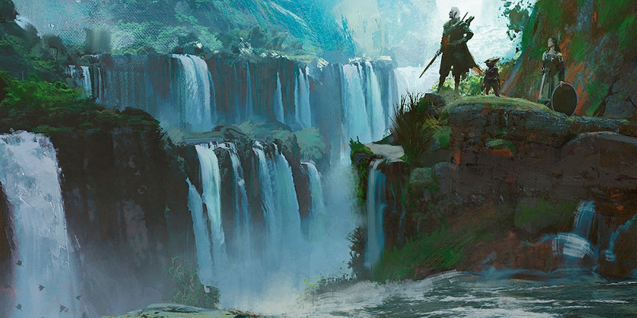

Elfes
Lorsque vous choisissez la sous-race d'un elfe, vous pouvez choisir l'une des options suivantes en plus de celles proposées dans le Manuel des Joueurs.
Avariel
Les avariels sont des elfes ailés. Ces créatures rares étaient plus nombreuses à la naissance des mondes du multivers, mais de fréquents conflits avec les dragons les ont décimées. Quelques colonies persistent tout de même ça et là dans le plan Matériel et le plan de l'Air.
Vol. Vous avez une vitesse de vol de 9 mètres. Pour utiliser cette vitesse, vous ne devez pas porter d'armure intermédiaire ou lourde.
Langues. Vous parlez, lisez et écrivez l'aérien.
Grugach
Les grugachs du monde de Greyhawk évitent le contact avec les autres peuples, préférant la solitude des forêts profondes et la compagnie des animaux sauvages. Ils ne font pas plus confiance aux autres elfes. Les grugachs tendent vers le chaos et la neutralité. Ils ne se sentent investis d'aucun devoir envers quiconque, excepté leur propre race et la forêt qui les accueille. Les problèmes qui ont lieu au-delà de leurs territoires ne doivent pas devenir les leurs. Aussi, ils essaient d'accéder à une vie harmonieuse avec la nature. Si quelqu'un est assez idiot pour semer le trouble dans un royaume grugach, ces elfes sont prompts à prendre les armes et à riposter. Les grugachs maîtrisent les rudiments martiaux nécessaires à la chasse et à l'exploration des bois. Chaque taillis d'arbre peut abriter la niche d'un sniper et chaque clairière peut cacher une embuscade. Les grugachs tendent des pièges mortels comme des fosses remplies de pieux, ou d'autres qui laissent peu de chance aux intrus de survivre à leurs flèches. Les grugachs combattent jusqu'à la mort pour préserver leurs royaumes.
Augmentation de caractéristiques. Votre Force augmente de 1.
Entraînement aux armes grugachs. Vous obtenez la maîtrise des lances, des arcs court, des arcs longs et des filets.
Sorts mineurs. Vous connaissez un sort mineur de votre choix parmi la liste des sorts mineurs de druide. La Sagesse est votre caractéristique d'incantation pour ces sorts.
Langues. À la différence des autres elfes, vous ne parlez, ne lisez ni n'écrivez le commun. Au lieu de cela vous parlez, lisez et écrivez le sylvestre.
Elfes aquatiques
Les elfes aquatiques sont tombés sous le charme de la beauté sauvage de l'océan dès les premiers jours du multivers. Alors que les autres elfes ont voyagé de royaume en royaume, les elfes aquatiques ont vogué sur les plus profonds courants et exploré les eaux d'une centaine de mondes. Aujourd'hui, ils forment une petite communauté cachée dans les haut-fonds des océans et du plan de l'Eau.
Augmentation de caractéristiques. Votre Constitution augmente de 1.
Entraînement aux armes des elfes aquatiques. Vous obtenez la maîtrise des lances, des tridents, des arbalètes légères et des filets.
Enfant de la mer. Vous avez une vitesse de nage de 9 mètres, et vous pouvez respirer sous l'eau comme dans l'air.
Ami de la mer. À l'aide de gestes et de sons, vous pouvez communiquer des idées simples à des créatures de taille Petite ou inférieure qui ont une vitesse de nage innée.
Langues. Vous parlez, lisez et écrivez l'aquatique.
Shadar-kai
Ayant prêté serment à la Reine corneille, les mystérieux shadar-kai quittent la Grisombre pour s'aventurer dans le plan Matériel. Autrefois, c'étaient des elfes comme les autres, mais ils existent maintenant dans un état entre la vie et la mort, leur peau pâle et leur corps marqués par des piercings et de sinistres tatouages.
Augmentation de caractéristiques. Votre Charisme augmente de 1.
Sorts mineurs. Vous connaissez un sort mineur de votre choix parmi contact glacial, stabilisation et thaumaturgie. Le Charisme est votre caractéristique d'incantation pour ces sorts.
Bénédiction de la Reine corneille. Par une action bonus, vous pouvez vous téléporter grâce à la magie jusqu'à 4,50 mètres vers un endroit inoccupé que vous pouvez voir, et vous gagnez la résistance à tous les dégâts jusqu'au début de votre prochain tour. Pendant ce temps, votre apparence est celle d'un fantôme translucide. Une fois que vous avez utilisé cette capacité, vous ne pouvez plus l'utiliser avant d'avoir terminé un repos court ou long.
Taille et poids
Race |
Taille de base |
Modificateur de taille (cm) |
Poids de base |
Modificateur de poids (kg) |
| Avariel | 1,40 m | +2d10 x 2,50 | 45 kg | x 1d4 / 2 |
| Grugach | 1,30 m | +2d6 x 2,50 | 37,5 kg | x 1d6 / 2 |
| Sea Elf | 1,35 m | +2d8 x 2,50 | 45 kg | x 1d4 / 2 |
| Shadar-kai | 1,40 m | +2d8 x 2,50 | 45 kg | x 1d4 / 2 |
Taille = Taille de base + Modificateur de taille
Poids = Poids de base + Modificateur de taille x Modificateur de poids

Écrit par Mike Mearls et Jeremy Crawford, traduit par Zoran999